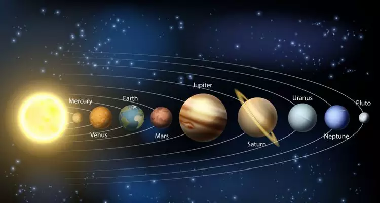

Júpiter, o maior planeta do nosso Sistema Solar, é uma imponente esfera gasosa que intriga e fascina astrônomos e entusiastas do espaço há séculos. Com sua massa colossal e aparência majestosa, Júpiter desempenha um papel fundamental na dinâmica do nosso sistema planetário. Neste artigo, mergulharemos nas características e curiosidades desse gigante gasoso.
Júpiter é um planeta gasoso, constituído principalmente de hidrogênio e hélio, com traços de outras substâncias, como metano e amônia. Essa composição o torna distinto dos planetas rochosos, como a Terra. Com um diâmetro de aproximadamente 142.984 km, Júpiter é mais de 11 vezes maior que a Terra e possui uma massa aproximadamente 318 vezes maior que a do nosso planeta.
